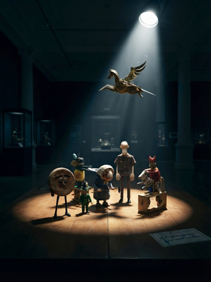

Sala II
Un plan necesita algo más que entusiasmo. Necesita un gaitero mecánico y un duende muy asustado.
El silencio en el museo es absoluto, roto solo por el sordo zumbido del foco de vigilancia que baña la mesa de los autómatas. La "Fuga de Alcatraz" mecánica está en marcha.
—Escuchad, chatarra selecta —murmura el Trilero, el líder de camisa oscura, con una voz que suena a engranajes oxidados—. El plan está claro. Pegasus ya está en posición en el techo, trazando la ruta de escape. Pero necesitamos que el guardia de la noche desaparezca. Es demasiado observador.
El Fool, el bufón de rojo, asiente enérgicamente, con su gorro cascabelero tintineando ruidosamente.
—¡Sí! ¡Desaparecer! ¡Como mis cubiletes invisibles! ¡JA-JA-JA-JA! Pero, ¿cómo?
—Ahí es donde entran nuestros talentos —responde el Trilero, señalando al personaje pequeño de verde—. Tú, pequeño duende de la madera, tienes la misión más crítica. El "Comando Distracción". En la mesa contigua hay un autómata que toca una gaita. Tu tarea es activarlo. Y asegúrate de que sea muy ruidoso.
El pequeño de verde parpadea, asustado.
—¿Yo solo? Pero... ¡ese gaitero da miedo!
—No estás solo. La Abuela tiene cubiertas las espaldas —dice el Trilero, haciendo un gesto hacia la Abuela labradora, que ya está agachada junto al sensor de presión debajo de la mesa, usando su azada con la precisión de un neurocirujano mecánico—. Ella está desactivando la alarma de presión para que puedas moverte.
La Galleta, con su expresión imperturbable y un poco lánguida, da un paso adelante.
—Y yo... bueno, yo me quedaré aquí. Con mi taza de café invis... bueno, con mi taza de café. Si viene el guardia, simplemente... le ofreceré uno. He oído que los humanos son más amables con cafeína.
El Trilero la mira, un poco escéptico.
—Ejem... sí. O simplemente... quédate quieta y actúa como una galleta. Es más seguro.
El pequeño de verde traga saliva y se aleja, arrastrándose hacia la mesa contigua. La Abuela sigue trabajando, un clic metálico tras otro. El Fool gira su manivela frenéticamente, con su caballo moteado a punto de despegar.
De repente, un gemido agónico resuena en la sala. Es la gaita. Y suena fatal. Es un cruce entre un gato al que le pisan la cola y una bocina de barco con asma. El sonido es ensordecedor.
El Trilero sonríe con malicia.
—¡Perfecto! Un sonido que solo un guardia de seguridad asustado podría amar.
La Galleta se tambalea con la música.
—Wow. ¿Ese es el sonido de la libertad... o de un cortocircuito mecánico?
—No importa —dice el Trilero—. ¡Vámonos! ¡Pegasus, encabeza la marcha!
